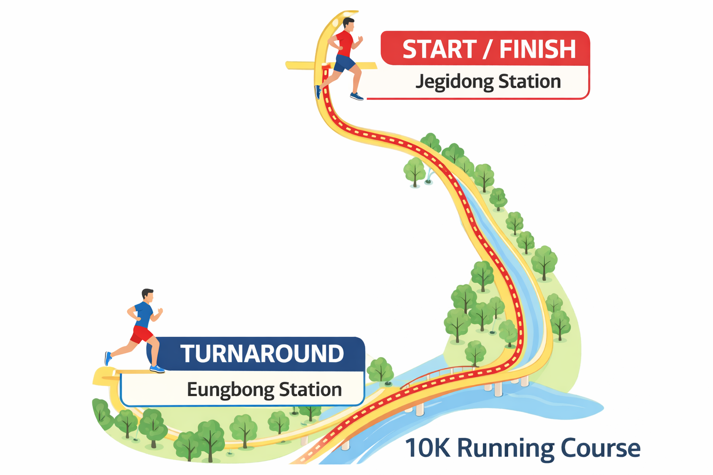
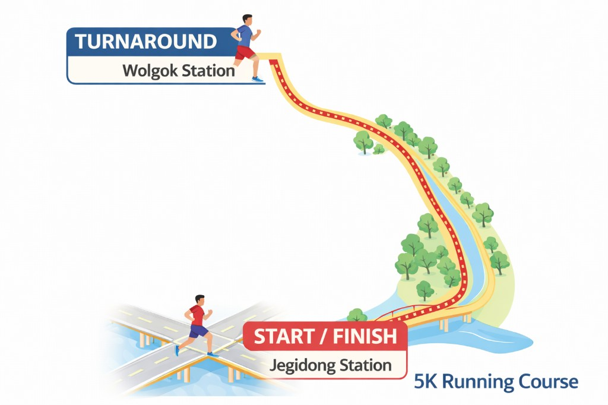

완주만 해도 불로장생하는 불로 마라톤 (aka 불로런)
2026 MISTO BULO MARATHON은
20대부터 50대까지 모두 아우르는
차별없는 마라톤 대회를 추구합니다.
OVERVIEW
대회개요
| 대회명 | 2026 불로런 (미스토 배 불로장생 마라톤) |
|---|---|
| 개최일정 | 3/27 금요일 (추후 일정 및 날씨에 따라 변동 가능) |
| 주최 | CJ올리브네트웍스 MISTO 프로젝트 |
| 코스 | 10KM 제기동 ~ 응봉역 / 5KM 제기동 ~ 월곡역 |
| 집결장소 | 정릉천 스케이트보드장 |
| 집결시간 | 오후 2:00 예정 (집결 일정 및 시간은 변경될 수 있음) |
REGISTRATION
접수 안내
미스토 프로젝트 구성원을 위한 특별 참가 혜택이 준비되어 있습니다.
COURSE
마라톤 코스
10K 코스
정릉천 출발 · 응봉역에서 반환
5K 코스
정릉천 출발 · 월곡역에서 반환
EVENT
이벤트 안내
10K 5등을 맞춰라!!
당일 10K를 뛰는 구성원이 공개되면 누가 5등을 할지 "정확히" 맞추시는 분들에게도 소정의 상품이 지급될 예정입니다.
이벤트는 추후 최종 10K 참가 명단이 결정된 후 응모페이지가 공개됩니다!
FAQ
자주 묻는 질문
시상은 어떤 기준으로 하나요?
10K 여자 1등, 남자 1등, 5K 여자 1등, 남자 1등 으로 선정합니다. 그리고 최대한 많은 사람들에게 상품을 줄 수 있는 동등한 기회를 주기 위해 등수에 차등을 두어 상품 추첨권을 부여합니다. (1등은 10개, 2등은 5개, 3등은 3개, 완주 시 1개) 어떤 상품이 있는지는 추후 공지됩니다.
코스는 어떻게 되나요?
위의 코스 맵을 참고해주세요! 정릉천 아래 스케이트 보드장에 집결 후 10K, 5K 모두 투썸 근처 계단으로 내려가면 있는 정릉천에서 시작합니다. 그리고 10K는 응봉 방향, 5K는 월곡 방향으로 뛴 후에 다시 처음 지점으로 반환합니다.
그룹별로 어떻게 나누어져 뛰나요?
그룹은 랜덤으로 나누어져 뜁니다! 10K는 A/B 그룹으로, 5K 경쟁 부문은 C/D 그룹으로, 그리고 5K 비경쟁부문은 E/F 그룹으로 나누어질 예정이며, 출발 순서는 E - F - A/C - B/D 순으로 진행합니다! (10K와 5K 코스는 상이함)
마라톤 굿즈도 있나요?
네, 있습니다! 무엇인지는 비밀입니다^ㅁ^
상품은 어떤게 있나요?
당일 상품 추첨권을 통해 공개됩니다!